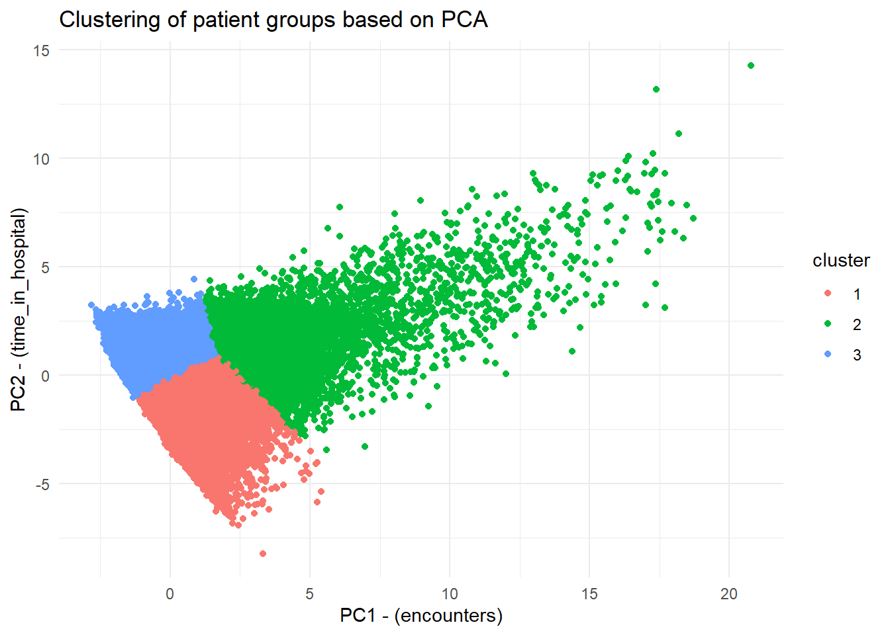

library(tidyverse)
library(broom)
library(cowplot)
library(ggplot2)
library(here)
aug_data <- read_csv(here("data/03_dat_aug.csv"))PCA analysis
Import dataset
Start of the PCA
Looking at the data in PC coordinates:
numeric_data <- aug_data |>
select(where(is.numeric)) |>
na.omit() |>
select(where(~ var(., na.rm = TRUE) > 0))
pca_fit <- numeric_data |>
prcomp(scale = TRUE)
data_clean <- aug_data |>
filter(row_number() %in% rownames(numeric_data))
pca_plot <- pca_fit |>
augment(data_clean) |>
ggplot(aes(.fittedPC1, .fittedPC2)) +
geom_point(size = 1.5) +
theme_half_open(12) +
background_grid()
pca_plot
Now we extract the rotation matrix
pca_fit |>
tidy(matrix = "rotation")# A tibble: 144 × 3
column PC value
<chr> <dbl> <dbl>
1 encounter_id 1 0.0920
2 encounter_id 2 -0.113
3 encounter_id 3 0.616
4 encounter_id 4 -0.00514
5 encounter_id 5 -0.200
6 encounter_id 6 0.0289
7 encounter_id 7 0.166
8 encounter_id 8 0.0607
9 encounter_id 9 -0.504
10 encounter_id 10 0.327
# ℹ 134 more rowsand plot it:
# arrow for plotting
arrow_style <- arrow(
angle = 20, ends = "first", type = "closed", length = grid::unit(8, "pt")
)
# rotation matrix
pca_fit |>
tidy(matrix = "rotation") |>
pivot_wider(names_from = "PC",
names_prefix = "PC",
values_from = "value") |>
ggplot(aes(PC1, PC2)) +
geom_segment(xend = 0,
yend = 0,
arrow = arrow_style) +
geom_text(
aes(label = column),
hjust = 1, nudge_x = -0.02,
color = "#904C2F"
) +
xlim(-1.25, .5) +
ylim(-.5, 1) +
coord_fixed() +
theme_minimal_hgrid(12)Warning: Removed 3 rows containing missing values or values outside the scale range
(`geom_segment()`).Warning: Removed 3 rows containing missing values or values outside the scale range
(`geom_text()`).
Look at the variance
pca_fit |>
tidy(matrix = "eigenvalues")# A tibble: 12 × 4
PC std.dev percent cumulative
<dbl> <dbl> <dbl> <dbl>
1 1 1.65 0.228 0.228
2 2 1.39 0.162 0.389
3 3 1.30 0.141 0.530
4 4 0.992 0.0820 0.612
5 5 0.973 0.0788 0.691
6 6 0.931 0.0723 0.763
7 7 0.854 0.0607 0.824
8 8 0.804 0.0538 0.877
9 9 0.721 0.0433 0.921
10 10 0.682 0.0387 0.959
11 11 0.647 0.0349 0.994
12 12 0.262 0.00572 1 And now the plot:
pca_bar_plot <- pca_fit |>
tidy(matrix = "eigenvalues") |>
ggplot(aes(PC, percent)) +
geom_col(fill = "#56B4E9",
alpha = 0.8) +
scale_x_continuous(breaks = 1:9) +
scale_y_continuous(
labels = scales::percent_format(),
expand = expansion(mult = c(0, 0.01))
) +
theme_minimal_hgrid(12)
pca_bar_plot
It is seen that 22.5% of the variance is explained by PC1. The drop of is after PC3.
Exporting the key plots
ggsave(
filename = here("results", "05_pca_plot.png"),
plot = pca_plot,
width = 8,
height = 6,
dpi = 300
)
ggsave(
filename = here("results", "05_pca_bar_plot.png"),
plot = pca_bar_plot,
width = 8,
height = 6,
dpi = 300
)Trying to cluster things
Here PC1, PC2 and PC3 is used to cluster the patient to possibly see patterns.
pca_data <- as.data.frame(pca_fit$x)
ggplot(pca_data, aes(x = PC1, y = PC2, color = PC3)) +
geom_point(size = 1.5) +
theme_minimal() +
labs(x = "PC1", y = "PC2", color = "PC3") +
scale_color_gradient(low = "blue", high = "red")
Here it is tried to cluster the patient based on k-means and the first 3 PC’s.
pca_data <- pca_data |>
mutate(cluster = kmeans(select(pca_data, 1:3), centers = 3)$cluster) |>
mutate(cluster = as.factor(cluster))
# Plot in 2D
pca_data |>
ggplot(aes(x = PC1, y = PC2, color = cluster)) +
geom_point() +
theme_minimal()